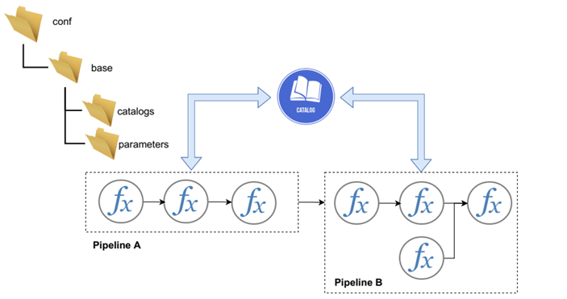

The design principles of eensight
Contents
2. The design principles of eensight#
import matplotlib.pyplot as plt
from eensight.utils import load_catalog
plt.style.use("bmh")
%matplotlib inline
2.1. Installation#
eensight can be installed by pip:
pip install eensight
2.2. Namespaces#
There are three (3) namespaces in eensight:
train: Datasets and pipelines that exist in thetrainnamespace will be used for baseline model training.test: Datasets and pipelines that exist in thetestnamespace will be used for baseline model evaluation.apply: Datasets and pipelines that exist in theapplynamespace will be used for counterfactual prediction (the reporting period).
This means that, by convention, there should be no difference between train and test data. If an event that alters the characteristics of the energy consumption (such as an energy retrofit) has taken place, the post-event data should be in the apply namespace.
2.3. Pipelines#
All the functionality in eensight is organized around data pipelines. Each pipeline consumes data and other artifacts (such as models) produced by a previous pipeline, and produces new data and artifacts for its successor pipelines.
There are four (4) pipelines in eensight. The names of the pipelines and the associations between pipelines and namespaces are summarized below:
train |
test |
apply |
|
|---|---|---|---|
preprocess |
✔ |
✔ |
✔ |
predict |
✔ |
✔ |
✔ |
evaluate |
✔ |
✔ |
|
adjust |
✔ |
The next chapters will explain in detail the functionality of each pipeline.
The primary way of using eensight is through the command line. The first argument is always the name of the pipeline to run, such as:
eensight run predict
The command
eensight run all
will run pipelines one after the other, while the command
eensight run default
will run only the preprocess and predict pipelines.
2.4. Input data#
There are four (4) arguments that affect where eensight searches for the input data, and where it stores all intermediate and final results:
--site-id: The id or name of the building site. This enables path configurations that include the site id to differentiate between different datasets.
--store-uri: The URI where the generated data and models should be stored. If not provided, eensigh will search for an EENSIGHT_STORE_URI environmemt variable.
--input-uri: The URI where the input data can be found. If provided, the input features are expected to be found at {{ input_uri }}/{{ namespace }}/features and the input labels at {{ input_uri }}/{{ namespace }}/labels. If not provided, eensight will use {{ store_uri }}/{{ site_id }}/01_raw/{{ namespace }}/features path as default for the input features and {{ store_uri }}/{{ site_id }}/01_raw/{{ namespace }}/labels for the input labels.
--batch: The batch id for the input data (features and labels) to apply the pipelines on. In eensight, training and testing of pipelines (train and test namespaces) is done on specific
datasets, but applying the pipelines (apply namespace) can be done on different batches of the data. If batch is provided, the input data is expected to be inside a .../apply/{{ batch }}/features path for features and .../apply/{{ batch }}/labels for labels.
2.5. Data catalog#
All pipelines get and store their datasets, parameters and models by interacting with a data catalog:

The catalog is parameterized by the following arguments that can be passed to the command line when running eensight:
–site-id: The id or name of the building site.
–namespace: The namespace acts as a prefix to the artifacts in the catalog.
The function eensight.utils.load_catalog allows loading the eensight catalog while parameterizing it for the site_id and the namespace. As an example, we can load the train data of the b01 dataset. The b01 dataset corresponds to the building with id=4 of the dataset provided by the EnergyDetective 2020 competition.
catalog = load_catalog(store_uri="../../data", site_id="b01", namespace="train")
The contents of the parameterized catalog are:
catalog.list()
[ 'model', 'model-autoenc', 'train.input-features', 'train.input-labels', 'train.validated-features', 'train.validated-labels', 'train.preprocessed-features', 'train.preprocessed-labels', 'train.adequacy-summary', 'train.prediction', 'train.prediction-autoenc', 'train.activity', 'train.performance', 'train.performance-autoenc', 'parameters', 'app', 'params:activity', 'params:activity.non_occ_features', 'params:activity.cat_features', 'params:activity.exog', 'params:activity.assume_hurdle', 'params:activity.n_trials', 'params:activity.n_trials_adjust', 'params:activity.upper_bound', 'params:activity.verbose', 'params:fit', 'params:fit.lags', 'params:fit.lags.temperature', 'params:fit.cat_features', 'params:fit.validation_size', 'params:rebind_names', 'params:rebind_names.consumption', 'params:rebind_names.temperature', 'params:rebind_names.timestamp', 'params:date_format', 'params:adequacy', 'params:adequacy.max_missing_pct', 'params:validation', 'params:validation.threshold', 'params:alignment', 'params:alignment.mode', 'params:alignment.mode.temperature', 'params:alignment.tolerance', 'params:alignment.tolerance.temperature', 'params:alignment.cumulative', 'params:alignment.cumulative.temperature', 'params:alignment.cumulative.consumption', 'params:filter', 'params:filter.min_value', 'params:filter.max_value', 'params:filter.allow_zero', 'params:filter.allow_negative' ]
The catalog provides access to the stored artifacts:
X_train = catalog_train.load("train.preprocessed-features")
y_train = catalog_train.load("train.preprocessed-labels")
fig = plt.figure(figsize=(12, 3.54), dpi=96)
layout = (1, 1)
ax = plt.subplot2grid(layout, (0, 0))
ax.scatter(X_train["temperature"], y_train["consumption"], s=10)
ax.set_xlabel("temperature")
ax.set_ylabel("consumption")

Artifacts that start with the namespace, such as the train.input-features, are accesible only when eensight runs with the specific namespace, for instance:
eensight run predict --namespace train
Artifacts without a namespace, such as the model, are accesible by all pipelines irrespectively of the selected namespace. The same is true for all parameters.
2.6. Parameter values#
eensight pipelines get their parameter settings from YAML files in the conf/base/parameters directory.
conf
│ README.md
│
└───base
│ │ catalog.yml
| | globals.yml
│ │ logging.yml
│ │
│ └── parameters
│ ├── preprocess.yml
│ ├── predict.yml
Parameters are accessed and treated exactly as prescribed by the Kedro documentation: https://kedro.readthedocs.io/en/stable/kedro_project_setup/configuration.html#parameters
The values of the parameters can be changed from the command line. As an example, the default value of the activity.assume_hurdle parameter is:
catalog.load("params:activity.assume_hurdle")
False
It can be changed to True by passing the following option to the command line:
eensight run predict --param activity.assume_hurdle=true
2.7. Experiment tracking#
eensight uses MLflow for experiment tracking. By default, MLflow tracking is enabled, which means: (a) all runs get a unique id (run_id), (b) all artifacts generated by a run are saved in a {{ store_uri }}/{{ site_id }}/tracked/{{ run_id }}/ path, and (c) all
parameters and metrics are stored by the MLflow tracking server. If disabled, (a) runs do not
get a run_id, (b) all artifacts generated are saved in a {{ store_uri }}/{{ site_id }}/untracked/
path, and (c) parameters and metrics are not stored by MLflow. If namespace is apply, MLflow
tracking is disabled automatically.
Experiment tracking can be disabled by passing the --no-tracking flag to the command line:
eensight run predict --site-id b01 --namespace train --no-tracking
The generated run id can be passed to the command line as well:
eensight run predict --site-id b01 --namespace train --run-id 6fa459eaee8a3ca4
Passing the run id indicates to eensight the run that contains the artifacts to be used (by test and apply pipelines) or updated (by train pipelines). If not provided and namespace is train and MLflow tracking is enabled, a new run id will be created. If not provided and namespace is test
or apply, the untracked artifacts will be used.
The command
eensight run --help
prints the documentation for all the options that can be passed to the command line.